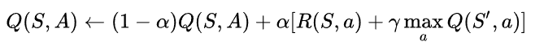
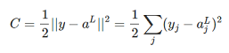
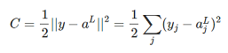
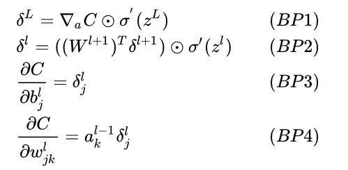

微分博弈问题是指一种连续时间域内的动态博弈问题[2]。由于在计算机内无法表示连续的时间流动，只能将时间离散化为很多段很短的时间dt来处理，这就是其名字的由来。
追捕者-逃跑者问题即是一种微分博弈问题。问题要求是求出一种策略，来让逃跑者尽可能久地不让追捕者追上。
在这里，我们令追捕者为一小车，逃跑者为一个人。小车有转弯半径，不如人灵活，但速度比人快。
要求出这个问题的博弈策略，用单纯的数学方法是非常复杂的，特别是像我们的这个问题条件中考虑的因素多，几乎不可能求解。 由于这个问题属于马尔科夫决策问题(MDP)，即问题中下一步的状态只与当前状态有关，与之前状态一律无关，我们可以使用强化学习来解决这个问题。
强化学习(Reinforcement Learning,RL)是一种通过与环境的交互，并通过交互结果来学习的机器学习方法。
它被广泛用于博弈类问题的处理，就如AlphaGo,AlphaZero都是基于强化学习模型。
其训练目标是为了知道“做什么才能使收益信号最大化”，但学习者不会被告知应该采取什么动作，而是通过尝试去发现，最后形成自己的价值判断来决策。它有四大要素：[1]
环境(environment)：是强化学习智能体与之交互的环境，如本项目中的追逃问题模型即为环境。环境有不同的状态(state)。
智能体(agent)：智能体是我们的训练对象，它通过做出动作与环境交互，如本项目中小人即我们要训练的智能体。
动作(action)：智能体做出的动作会令其直接获得环境的奖励信号，并会改变环境的状态。
奖励(reward signal)：是强化学习问题的目标，它定义了智能体的动作与事件的好和坏。
强化学习的方法具体反映了智能体如何根据经验改变策略，使得在长期运行过程中接收到的回报总量最大化。因此，它既需要考虑短期利益，也需要考虑长期利益。 奖励信号定义了短期利益的大小，但是无法体现长期的利益。所以在这里，我们要引入值函数(value function)的概念，既考虑短期奖励，又从长远角度考虑一个状态的好坏。 而我们的训练目标就是训练出一个合理的值函数，能正确估计每种状态下做每种动作得到的价值(也叫做Q值)，从而让智能体根据此值函数来决策。这就是Q Learning的基本做法。
在Q Learning的实现中，如果状态和动作是离散的，只有有限种，则我们可以列出一个状态-动作表格，每一组状态-动作对应一个值函数的输出(Q值)。 智能体在每种状态下，只需要挑选值函数最大的动作执行即可。 当然为了避免智能体陷入局部最优解，我们通常会设置一个很小的概率epsilon，使得智能体有epsilon的概率会随机选择一个动作进行执行(程序中我们设置EPSILON=0.02)，以对环境进行更广泛的探索，这被称为epsilon-greedy策略。 在强化学习中，常常要平衡探索未知环境与利用已知规律的关系。 那么，要训练Q Learning中的值函数，我们要做的就是像下图中的公式里一样，将该对状态-动作下获得的直接奖励与动作导致的下一个状态中采取最优动作能达到的最大Q值乘上折扣率gamma，以alpha的比例更新进原来的Q值里。 这里折扣率gamma是一个小于1但接近1的值，代表要考虑长远利益的程度，在此公式中若下一个状态乘上了gamma，我们展开下一个状态的公式会发现里面包含着乘上了gamma的下下个状态，相当于下下个被乘上了gamma^2，以此类推，此后第n个状态会被乘上gamma^n。这其实是值函数的原始定义，体现了值函数的真正意义，即考虑长期收益，越长期重要性也越低。
Q Learning更新公式：

值函数定义公式：
但许多问题，包括当前问题，状态空间甚至动作空间都可能是连续的，是无穷多种的，这时就不可能列出Q值的表了。
在这种情况下，我们需要使用神经网络。神经网络的训练目标即拟合出一个函数，对于特定的输入能够有特定的输出。我们要训练的神经网络是要对于输入给定的状态，输出其各个动作的值函数。
最普通神经网络的结构如下图所示，即每一层都有若干个神经元，每个神经元都与上一层所有神经元连接（这种叫做全连接层），里面的数值由上一层的每个神经元的值乘上每个神经元对应权重的和，也可以理解为当前层神经元向量的值由上一层的神经元向量与权重矩阵进行矩阵乘法得到。
由于要拟合的通常是非线性的函数，我们还要在每一次矩阵乘法算出下一层的值后，加一个偏置(每个神经元都有一个，为一实数)，再将该值放入非线性激活函数，如ReLU函数，即max(0,x)，以增加神经网络的非线性性。则神经网络由l层的值推到l+1层的公式为：
 。
神经网络输出的好坏通过损失函数来评估，如MSE损失函数就是通过计算预期输出向量与实际输出向量中每个数的差的平方和的平均值(还要乘上0.5方便求导)。

。
神经网络输出的好坏通过损失函数来评估，如MSE损失函数就是通过计算预期输出向量与实际输出向量中每个数的差的平方和的平均值(还要乘上0.5方便求导)。

神经网络的训练，就是通过改变的就是权重和偏置的值来使损失函数最小化。而改变值的方法通常是求出损失函数对每个权重值和偏置值的导数，再让这些网络参数减去其导数乘上学习率的值，这被称为梯度下降法。
为了使求导结果更稳定，我们常将数据分成一批一批(batch)训练，每批中导数取平均后再改变神经网络的参数。
但是，在将神经网络用于强化学习时会出现一些实践上的问题。其一，我们知道，在训练神经网络时，需要大量带标签的样本进行监督学习，但是强化学习只有reward返回值。要解决这个问题，我们可以通过使用reward和神经网络本身来构造标签，用与Q Learning的类似方式来规定神经网络的预期输出。 由此，第二个问题是使用神经网络本身来构造标签会导致训练出现不稳定等问题，所以我们可以由一个目标网络(Target Net)来进行价值判断，每隔一段时间再将当前训练着的神经网络复制给目标网络。 第三个问题是，常规深度学习的样本独立，而强化学习前后状态相关。要让神经网络从前后相关的状态中提取信息，我们可以构造一个经验池。 具体做法是把每个时间步智能体与环境交互得到的转移样本 (s[t],a[t],r[t],s[t+1])(s为状态，a为动作，r为奖励)储存到经验池，训练时就随机从中拿出一些经验(batch)来训练。
这三个措施组合起来就成为了DQN算法，即深度Q网络算法。它重复产生新经验，并从旧经验中借助目标网络进行价值判断生成目标Q值，并按此以类似于Q Learning的方式更新值函数(即神经网络的输出)。 经过许多次的迭代更新，最终就可以训练出能胜任这个微分博弈问题的神经网络。下图是2015年发表在nature的DQN算法版本[3]，我们程序中实现的就是这个版本。

注：我们的设计方案以numpy版为例，pytorch版的实现类似，不再赘述。而numpy版的神经网络部署程序又相当于训练版程序的一个轻量级版本，删除了部署神经网络验证其性能时不需要的训练相关函数，所以我们可以以numpy版的神经网络训练程序为例讲解程序。
在我们对问题的建模中，小车的形状简化为一矩形，长4.8米，宽2米，转弯半径为20米，最大前进速度为10m/s，最大加速度为5m/(s^2)。
人被简化为一质点，最大前进速度为6m/s，最大加速度为8m/(s^2)(按照短跑标准[4])。
在这里我们通过设置阻力与速度成正比来实现加速度随速度增长而减小，速度指数逼近最大值的效果。
将时间离散化为一个个很短的时步dt，由于这里我们并不需要很高的计算精度，可以取时步dt=0.04。
若小人被车追上，此轮微分博弈终止；否则若微分博弈超过1000个时间步，也将强制终止该局。
我们将小人的动作action编码为为0-12的整数，action为0-11时代表往action*30度的辐角方向(小车前进方向逆时针旋转action*30度)以最大加速度加速，而12表示无加速度。
由此我们可以构造一个环境类Env。类里的变量包括人和车的位置向量x_p与x_car，人的速度向量v_p，车的朝向direct_car以及速率标量v_car(为了下面构造状态输入的方便)，还有表示输赢或者博弈未结束的值win_fail。
下面介绍各类函数：
__init__(): 类的初始化函数会不失一般性地假设车在原点，朝向x轴正方向(辐角为0)，而相对移动人的位置，默认人和车一开始速度都是0，win_fail初始值为0。
也就是说初始化中唯一有可能不同的是人的初始位置，人的初始位置依正态分布，离原点越近概率越大，如此设置是因为离车越近，越需要精细操作，越需要多加训练。
restart():与类的初始化函数相同，随机生成开局
restart_validation():生成固定的开局，人的初始位置为(50,0)，专门用于验证神经网络性能
get_anim_state(): 按生成动画文件所需要的数据格式输出当前类状态
get_state():按神经网络输入格式来输出当前类状态。这里以汽车为原点建立自然坐标系(如图)，y轴为汽车速度方向，车右边为x轴正方向，则只需要五个数就可以表达当前状态有用的信息，即人在此坐标系中的位置速度向量这4个数和汽车速度标量这1个数，最大程度减少信息冗余。

step(action,dt):通过当前状态和智能体动作action，来推出dt时间后环境的状态。
这里用到了欧拉积分，即泰勒展开一阶近似，写成公式为v[t+1]=v[t]+a[t]*dt,x[t+1]=x[t]+v[t]*dt。
在这里车的操作的自动的，其逻辑为人的位置向量在汽车自然坐标系的y坐标(即车前进方向上的投影)为正，则汽车向前加速，否则汽车向后加速。同理，若x坐标为正则向右，否则向左。
本程序中，由于输入只有5个数，不需要使用特征提取等手段进行处理，所以我们不需要使用卷积神经网络中的卷积层和池化层，我们直接使用最普通的全连接层神经网络即可。
我们这个程序用到的非线性激活函数是LeakyReLU函数，即当x大于0时函数值为x，x小于0时函数值为0.01*x，这样当x小于0的时候其导数不为0，也可以对权重进行更新。我们在relu(x)中定义该函数，在d_relu(x)中实现其导数。
我们选择的损失函数就是最普通的、前文所述的MSE均方误差函数。
我们搭建的神经网络类包含如下类变量：
size即神经网络每层大小，是神经网络最重要的参数，由size可以直接唯一地确定神经网络的结构。
由于输入数据(即状态值)为5个数，输出(即每种动作的值函数)有13个数，所以神经网络的输入层大小为5，输出层大小为13。
在numpy版中，神经网络各层大小为[5,12,16,13]，则其含有的权重参数有5*12+12*16+16*13=460个，偏置参数有5+12+16+13=46个。
在pytorch版中，由于其对神经网络运算的优化更好，可以使用更大的网络，获得更好的拟合效果。
我们选择的各层大小为[5,84,50,13]，则其含有的权重参数有5*84+84*50+50*13=5270个，偏置参数有5+84+50+13=152个。
我们用多个装着numpy矩阵的list来存放网络参数：layer存放神经网络输入层、各隐含层和输出层，weight存放各层神经网络权重，sum_adjust_weight存放神经网络反向传播中对权重求导所得导数，
bias存放神经网络各层偏置，sum_adjust_bias存放神经网络反向传播中对偏置求导所得导数。
最后，我们用一个浮点数total_loss来存放神经网络损失函数，用以求平均损失。
下面介绍神经网络类的类函数：
__init__(size): 类的初始化函数会按照输入的神经网络size来搭建神经网络的结构，随机初始化所有权重在-0.5~0.5之间，并初始化偏置为0。
forward(layer_input)会由神经网络的输入layer_input求神经网络输出结果，由于它从输入层一步一步推往输出层，故又被叫做前向传播。
loss_forward(layer_input,result_est):此函数会从输入layer_input求出神经网络输出，并与估计输出result_est对比来求神经网络损失函数值
backward(layer_input,result_est):
反向传播函数，神经网络最重要的函数！它先由神经网络输入求出输出和损失，然后再通过微分的链式法则向前一层一层地求出损失函数对每个权重值和偏置值的导数。其四个公式如下图所示，在程序中以矩阵运算形式实现。

train(training_set,learning_rate=0.001,epoch_size=EPOCH_SIZE,batch_size=BATCH_SIZE,times=BATCH_SIZE*EPOCH_SIZE):神经网络训练函数，这是使用神经网络时主要调用的函数，整合了其它子函数。训练集training_set为神经网络的训练数据，里面每个数据点以(input,label)(label即预期输出结果)的格式存储。
函数将整个训练集分成epoch_size个大小为batch_size的batch，一个batch一起训练。batch_size和epoch_size的默认值在程序的开头已定义好，为BATCH_SIZE=64和EPOCH_SIZE=300。训练时，将batch中的每个数据点反向传播求导后再求它们的平均导数，用平均导数乘上learning_rate来更新网络。这里learning_rate越大网络更新步长就越大，但稳定性也越差。训练函数结束后会输出这段训练过程中的平均损失。
write_into_csv(filename):将神经网络参数输入到csv文件中，需要指定输出文件名filename。
copy_value_from_csv(filename,size):从write_into_csv(filename)函数生成的csv文件中读入神经网络参数，需要指定输入文件名filename和神经网络每层大小size。
经验池类变量为exp与anim两个双端队列(基于python内置的collections库)，分别以神经网络训练要求的输入经验格式(字典{"state":,"action":,"reward":,"state_next":,"is_done":})(即当前状态、动作、奖励、下一状态、博弈是否结束)和动画文件要求的输入格式(即Env类中get_anim_state()的输出格式)存储经验。
经验池的类函数有：
__init__():初始化最大长度为MAX_EXP_SIZE=100000的exp与anim两个双端队列。
__len__():使python内置的len()函数可以获取经验池长度。
add(exp,frame_data):将exp添加至队列exp，将frame_data添加至队列anim，添加元素时尽量使用这个函数使得exp和anim可以同步添加。
get_sample(size):获取经验池样本(供神经网络训练)。它会生成长度为size的、范围在exp长度内的随机序列，然后按这个序列取exp中元素，允许重复。
get_anim_data(self,start_point):从anim的第start_point个数据点开始获取动画数据，直到此轮博弈终止的那个数据点。
首先我们需要经验池的经验才能训练神经网络。构造经验池里的经验时，在某一个状态下，环境的表现将由智能体的动作唯一确定。所以我们通过下面两个函数，决定对于每个状态的动作，来构造经验：
rand_exp_buffer(env,buffer,size):一开始时，随机采取动作来构造经验。这样动作有好有坏，但好的状态还是会比坏的状态平均奖励更高，智能体能大致学习到值函数。
函数输入中size为构造的经验个数，env为环境类，buffer为经验池类。当一轮博弈终止，函数会自动重启新一轮博弈以继续构造经验。
nn_exp_buffer(target_nn,env,buffer,size):有了稍经训练的神经网络之后，我们就按照目标神经网络的价值判断来采取动作，以1-EPSILON的概率采取值函数最大的动作，以EPSILON的概率采取随机动作。
函数输入中target_nn为目标网络，size为构造的经验个数，env为环境类，buffer为经验池类。当一轮博弈终止，函数同样会自动重启新一轮博弈。
在这里：我们定义奖励值为0.5*r+dr/dt(r为与小车中心距离)，这里借鉴了PID控制器的思想，只不过由于马尔科夫性，距离的积分I没有意义，所以我们实际使用的是PD控制，以接近速度和距离来控制动作值函数。
接下来，我们将要把上述各种实现组合起来成为一个2015年nature版深度Q网络(算法流程见上图)。
首先我们要初始化环境类、经验池类和神经网络类。
我们在程序中搭建起来两个一模一样的，各层大小为[5,12,16,13](pytorch版为[5,84,50,13])的神经网络，一个作为训练网络一直更新，一个作为目标网络每隔一段时间复制训练网络来更新(用了deepcopy)。
如果已经之前已经有了训练了一半的神经网络(称为预训练模型)，则在程序开头设置PRE_TRAINED=True，程序将从开头定义的文件名MODEL_FILENAME读入参数，并且不需要随机构造经验；否则需要随机构造。
接着进入训练循环，训练EPOCHS个epoch。每个epoch中，我们从经验池取出一批经验，并经由目标网络得出经验中采取动作的值函数： ，这个值将作为神经网络预期输出用来反向传播更新网络。
我们将上述经验中的状态(神经网络输入)和神经网络预期输出对应，添加进训练数据集里。最后，将训练集送给神经网络训练。epoch结束后，若当前网络损失值最小，则保存该网络到文件中；每10个epoch(pytorch版每3个epoch)会输出当前网络参数还有神经网络损失与表现分值，并验证神经网络性能，画出小车与人追逃博弈的轨迹图以及动画。
，这个值将作为神经网络预期输出用来反向传播更新网络。
我们将上述经验中的状态(神经网络输入)和神经网络预期输出对应，添加进训练数据集里。最后，将训练集送给神经网络训练。epoch结束后，若当前网络损失值最小，则保存该网络到文件中；每10个epoch(pytorch版每3个epoch)会输出当前网络参数还有神经网络损失与表现分值，并验证神经网络性能，画出小车与人追逃博弈的轨迹图以及动画。
程序里实现了如下可视化函数：
anim(data,frames,filename,faster=4.0):输出动画，并保存为文件，faster为动画加速倍数，默认为4倍。动画最多帧数设为200，在200帧处强行截断。因为若动画帧大于200时，基本小车已经在和小人在周期性的模式下循环往复地追逐了，而且输出200帧的动画时间开销也已经接近15秒了，没有必要输出接下来的帧。
update(i,data,ax):更新动画帧的函数，是anim函数的附属函数。画出当前帧时的小车和小人位置。
model_result_3D(nn):可视化网络对各种输入的对应输出，画出3D图像，图像z轴的值是0-12的整数，代表小人动作的编号。(示例图在2.7)
我们常在此函数中调用上述可视化函数：
nn_validation(nn,env,val_file,anim_file,random_start=False):此函数用来验证神经网络性能，画出轨迹图像和博弈过程动画，并返回小人坚持不被小车追上的时长作为神经网络表现分。函数参数random_start意思是是否随机开局，默认为False以控制变量，在部署时调成了True，以证明神经网络在不同的开局下都可以良好运行。
函数输入中nn为训练好的网络，env为环境类，buffer为经验池类，val_file为轨迹图文件名，anim_file为GIF动画文件名。


每个程序运行结束后都会通过model_result_3D(nn)函数来输出3D图像。训练程序结束后还会画出损失函数的下降曲线图像。
这里我们讲解部署(deployment)程序。
部署时，肯定不会再用epsilon-greedy的策略，所有状态下均采取值函数最大的动作。程序主要流程就是初始化神经网络和环境，然后从文件中读入训练好的神经网络。 接着调用20次nn_validation函数，画出随机开局下，智能体与小车追逃博弈的轨迹图以及动画，输出文件名通过字符串格式化来编号。
在训练过程中，观察输出的小车与人追逃的轨迹图及动画文件，可以感受到神经网络对小人的操控策略越来越优，最终可以学会大致在离车远时向着远离车的方向跑，离车近时向着与车前进方向垂直的方向跑甩开小车的策略，并可以把握住分别在什么时候使用这两种策略的分寸。 我们训练的神经网络，可以达到在约95%甚至更高的概率下，小车永远会被人甩开而追不上人。有时，神经网络还能做到以人类难以想象的路径来规避小车。如下图：


在model_result_3D(nn)输出的3D图像中，我们可以看到，智能体在小车前方倾向于选择动作11(小车前进方向逆时针旋转330度)，也就是与小车前进方向成一小角度；而在小车侧面或很近的前方，智能体倾向于选择动作3或7，与小车前进方向垂直。

在损失函数中，我们可以清晰地看到，随着神经网络的训练，损失函数在不断地保存下降地趋势，逐渐收敛。这体现了网络在不断地学习，直到其价值判断与现实相差无几。

整个程序除了显示3D图像的部分是基于matplotlib官方文档中的例子之外，其余所有部分从构思到编写都是由本人完成。
这个程序最大的创新部分，就是不调用现成的机器学习框架，自己从底层一步一步地搭建起整个神经网络。现如今很多机器学习的工作都是调用现有的框架，无论是在网络上还是在书里，都很少有人再对其进行底层实现。 由于经典的机器学习框架PyTorch和TensorFlow都是安装大小几百MB、展开大小几个GB的重量级库，这样做最显而易见的好处就是不依赖于这些重量级的库。 同时，这样做也深化了我对神经网络的底层原理的认识。此外，大量的矩阵、张量操作也加深了我对numpy库的掌握。
除此之外，这个程序在可视化方面下了比较大的功夫。程序用轨迹图和gif动图可视化了训练完成的神经网络是如何操纵小人躲避小车的，并可以通过神经网络损失函数值图像的下降来体现神经网络逐渐学习优化的过程，还可以通过3D图像来直观地显示强化学习体在状态空间中如何决策。这一点也算是这个程序的优点。
本程序分别用numpy和PyTorch库各实现了一个版本，两个版本功能相同，可任选一个启动，其中的numpy版本不依赖于非常重量级的PyTorch库,是本作业的精华。 检查代码时可检查numpy版的训练程序，因为里面包含了绝大部分其它程序里的实现(其它程序里可能会有微调，但是原理一样)，检查神经网络是否能对这个微分博弈问题有效求解可以查看部署程序，里面也包含了绝大部分输出的实现。
训练程序(training)无需任何输入，直接运行即可，然后等待训练，每训练10个epoch(pytorch版每3个epoch)会输出当前网络参数还有神经网络损失与表现分值，并验证神经网络性能，画出小车与人追逃的轨迹图以及动画。输出文件名会按epoch数来命名。直接在当前文件夹查看这些文件即可。
numpy版大约需要500个epoch的训练才能达到基本实现完全不被小车追上的效果，平均每10个epoch需要1.4分钟的训练，共需要约1小时时间。
pytorch版达到同样效果大约需要50个epoch的训练，平均每10个epoch需要3.5分钟的训练，共需要约20分钟时间。
等待过程中，可以从损失的不断下降、轨迹图及动图中小人越来越优的策略感受到神经网络在不断地学习。
训练结束后程序会输出损失函数的下降曲线和神经网络对状态空间中状态的响应3D图。
注意：GIF动图在Anaconda里无法播放，需要在程序文件夹里面打开！
而验证程序可以使用我之前已经训练好的神经网络参数，它会自动从本文件夹内的神经网络存储文件(DQN numpy.csv或DQN torch.txt)中读入，所以该程序也是点击运行即可。程序会输出20个随机开局下，小车与人追逃的轨迹图以及动画。轨迹图像的输出是很快的，但GIF不一定，是由帧数决定。 我们训练的神经网络，可以达到在约95%甚至更高的概率下，小车永远会被人甩开而追不上人，这时的GIF动图将有200帧，所以需要约13秒来输出。


程序前面定义的大写字母参数如果有必要可以修改，但尽量不要改动环境相关的变量，在新环境下，旧的神经网络需要再增加训练以适应新环境(由于这是迁移学习，训练成本确实会更低，不过不推荐)。
在选择这个题目之前，我曾想过选择卡尔曼滤波器作为大作业的题目。但当我完成了卡尔曼滤波器的程序后，我发现它并不是我一开始想象的那么难，作为大作业甚至不够格。 而我刚开始学习的强化学习，虽然困难很多，但是更加精彩，更适合作为大作业的题目，可以一试。 然后，就有了从搭建起第一个神经网络，到第一次训练好一个神经网络，再到与强化学习和微分博弈组合起来，一步步开拓自己知识的边疆、直到完成这个作业的激动人心的过程。 虽然只是在向知识高峰出发的第一步，但还是让我感受到了科大学子勇攀科学高峰的精神。
在完成这个程序的过程中，通过调用numpy库，从底层开始，建立起神经网络，特别是最难实现的反向传播的部分，让我对神经网络的底层原理的认识有了很大的深化，让我不仅仅只成为一个调库侠。 同时，大量的矩阵、张量操作也加深了我对numpy库的掌握。除去重复的代码，在这个作业中，我完成的代码量共有700多行，这也让我对python的熟悉程度上了一个台阶。
在上这门课之前，虽然我对python略有了解，可以实现一些好用的程序，但之前的学习终究是不系统的。 无论在我编写python时要频繁百度，还是我对很多好用的python库函数不了解而从底层给他们实现了一遍，都体现了这一点。 而在这门课上，老师讲义里系统地、详细地展示了各种函数的妙用，正适合我的这种学习状况，帮助我系统地补足了我之前python知识的缺漏。 同时，在大作业中，我的python知识又经过大量的代码得到磨练，对python的熟练程度特别是对numpy库的熟练程度有了非常大的提升。 在这里非常感谢这门课程带给我的帮助！
工欲善其事，必先利其器。熟练地掌握了python这门强大的语言，也就掌握了一件得力的工具。 在现在，我已经享受到python自动化办公、数据处理和数学建模带来的诸多便利和成果，我相信在未来，python将带给我更多的帮助和裨益！
[1] [俄]马克西姆•拉潘(Maxim Lapan). 深度强化学习：入门与实践指南. 机械工业出版社, 2021.
[2] [加]霍华德 M.施瓦兹. 多智能体机器学习：强化学习方法. 机械工业出版社, 2019.
[3] Mnih, V., Kavukcuoglu, K., Silver, D. et al. Human-level control through deep reinforcement learning. Nature
518, 529–533 (2015). https://doi.org/10.1038/nature14236
[4] The Physics Of Running, https://www.real-world-physics-problems.com/physics-of-running.html